6 Visualizing and Reporting Educational Data with R
Abstract
Visualizing data is central in learning analytics research, underpins learning dashboards, and is a prime method for reporting results and insights to stakeholders. In this chapter, the reader will be guided through the process of generating meaningful and aesthetically pleasing visualizations of different types of student data using well-known R packages. The main visualization types will be demonstrated with an explanation of their usage and use cases. Furthermore, learning-related examples will be discussed in detail. For instance, readers will learn how to visualize learners’ logs extracted from learning management systems to show how trace data can be used to track students’ learning activities. In addition to creating compelling plots, readers will also be able to generate professional-looking tables with summary statistics.
1 Introduction
Data visualization can be defined as “the representation and presentation of data that exploits our visual perception abilities in order to amplify cognition” [1]. It has the power to transform complex information into compelling and insightful stories that enlighten, inform, and inspire action. Data visualization is an effective tool for learning analytics, as it helps to present learners’ data in a way that is easily understandable and intuitive for students, teachers, researchers, and other stakeholders. Through the use of graphs, charts, and other visual aids, it is possible to quickly identify patterns, trends, and relationships within data that may not be immediately apparent through traditional data analysis methods.
Visualization in learning analytics has two distinct applications. On the one hand, the use of visual dashboards has become the main vehicle for putting learning analytics into practice. By presenting data in visually appealing and intuitive ways, visualization can help promote data literacy among students and other stakeholders, encouraging greater engagement with data and fostering a culture of continuous improvement. On the other hand, learning analytics scientific production heavily relies on data visualization to present research findings in a clear and accessible manner, making it easier for readers from different scholarly backgrounds to understand and act upon research insights. Regardless of the context, the power of visualization in learning analytics lies in its ability to take complex data and turn it into meaningful insights that support better decision-making and drive improvement. By leveraging the power of visualization, learning analytics professionals can unlock the full potential of data to enhance the quality of education and promote evidence-based practice.
In this chapter, the reader will be guided through the process of generating meaningful and aesthetically pleasing visualizations of different types of datasets using well-known R packages. Relevant plots and plot types will be demonstrated with an explanation of their usage and usage cases. Furthermore, learning-related examples will be discussed in detail. For instance, readers will learn how to visualize learners’ logs extracted from learning management systems to show how trace data can be used to track students’ learning activities. Other examples of common research scenarios in which learners’ data are visualized will be illustrated throughout the chapter. In addition to creating compelling plots, readers will also be able to generate professional-looking tables with summary statistics to report descriptive statistics.
2 Visualization in learning analytics
Developing visualizations is a challenging task of balancing the cognitive load of users while not compromising on conveying specific insights from data [2]. Visualizations for practice in learning analytics are mostly developed for two main stakeholders: learners and instructors. Depending on the target group, a visualization or a dashboard (i.e., a collection of visualizations depicting multiple indicators) have different goals.
Learner-facing visualizations are meant to make learners aware of their own learning and to provide them with actionable feedback on their learning. Visualizations display learners’ performance on a specific metric and compare it with a reference frame: other peers, desirable learning achievement, or their own progress over time [3]. Sense-making questions triggering reflection can be added to a visualization [4, 5], or some elements of the visualizations can be highlighted and described in words using layered storytelling [6, 7]. Another option is to gamify a dashboard, for example, by using badges [8]. To provide feedback to learners, visualizations can be augmented with links to recommended resources [9], information about specific topics to review to close the achievement gap [6], or explanations of the meaning of visualizations and their implications for the learner [10]. Current learner-facing dashboards mostly show resource use and assessment data [11], compare learners to their peers [12], display descriptive analytics rather than predictive or prescriptive analytics [10], and use self-regulated learning theory as their framework [12, 13]. Some reviews found a positive effect on student outcomes [10], while others reported mixed results [11, 14]. Showing visualizations to learners can change their behavior. For example, social network analysis visualizations have resulted in fewer cross-group commenting [15], while a visualization comparing individual submission patterns with the top 25% of students in a class led to earlier homework submissions [16].
In comparison, the goal of instructor-facing visualizations is to support teachrs and their decision-making process by tracking student progress. Two main types can be distinguished. Mirroring or descriptive visualizations provide insights about the learners on an aggregated or an individual level using either descriptive or comparative data. Advising or prescriptive visualizations show not only information about the learners but also alert the instructor to undertake a pedagogical action [17, 18]. Current instructor-facing visualizations mostly display course-wide information about the learners or track group work [14]. These visualizations can support teachers in facilitating student collaboration [19], planning and collecting student feedback on learning activities [20], or obtaining insights into student interactions within an online environment, such as simulations, virtual labs or online games [21, 22]. However, interpreting dashboard information is a challenging task for instructors. Although some teachers use dashboards as complementary sources of information, others act based only on the dashboard information without further investigation [23].
A common point of criticism of learning analytics dashboards is that most of them are not grounded in learning theories [13, 14]. Data-driven evaluations of dashboards focused on dashboard acceptance, usefulness, or usability are more prevalent than pedagogically-focused evaluations [24]. Some approaches were developed to mitigate these issues. The model of user-centered learning analytics systems (MULAS) presents a set of recommendations on four interconnected dimensions: theory, design, evaluation, and feedback, and can be used to guide dashboard development [14]. Another approach is an iterative five-stage Learning Awareness Tools – User eXperience (LATUX) workflow, including problem identification, low-fidelity prototyping, high-fidelity prototyping, pilot studies, and classroom use, that can be used to develop visual analytics [25]. Finally, open learner model research could be used as a source of insights while developing learning analytics visualizations, such as dashboards [9].
3 Generating plots with ggplot2
In the previous section, we have seen how central visualization is to learning analytics. In the remainder of the chapter, we will learn how to create different types of visualizations that are relevant to different types of data related to teaching and learning. We will mostly rely on ggplot2, a popular data visualization package in R that was developed by Hadley Wickham [26]. It is based on the grammar of graphics [27], which is a systematic way of thinking about and constructing visualizations. The ggplot2 library provides a flexible and intuitive framework for creating a wide range of graphics, from basic scatter plots to complex visualizations with multiple layers. It is known for its ability to produce visually appealing and informative graphics with relatively few lines of code. It enables users to define aesthetics, such as color and size, and add layers, such as points and lines, to create customized and interactive plots. In addition, ggplot2 allows for easy customization of plot features, such as titles, axis labels, and legends.
Overall, ggplot2 is a powerful and versatile tool for data visualization in R, and is widely used by data scientists, statisticians, and researchers in a variety of fields. In this chapter, we will cover the fundamental concepts and techniques of ggplot2, including how to create basic plots, and customize their appearance. We will start by introducing the building blocks of a ggplot2 plot, including aesthetics, layers, and scales. Then, we will create a plot from scratch step by step, showing how to customize the appearance of the plots, including how to change theme, colors, and scales. We will then explore the different types of plots that you can create with ggplot2, such as scatter plots, bar charts, and histograms.
Throughout this chapter section, we will use datasets of students’ learning data to demonstrate how to create effective visualizations for learning analytics with ggplot2. Please, refer to Chapter 2 of this book [28] to learn more about the datasets used. By the end of this section, you will have a solid foundation in ggplot2 and be able to create basic, yet compelling visualizations to explore your data.
4 The ggplot2 grammar
The ggplot2 library is based on Wilkinson’s grammar of graphics [27]. The main idea is that every plot can be broken down into a set of components, each of which can be customized and combined in a flexible way. These components are:
Data: This is the data we want to visualize. It can be in the form of a dataframe, tibble or any other structured data format.
Aesthetic mapping (
aes): It defines how variables in the data are mapped to visual properties of the plot, such as position, color, shape, size, and transparency.Geometric object (
geom): It represents the actual visual elements of the plot, such as points, lines, bars, and polygons.Statistical transformation (
stat): It summarizes or transforms the data in some way, such as by computing means, medians, or proportions, or by smoothing or summarizing data, or grouping them into bins.Scale (
scale): It maps values in the data to visual properties of the plot, such as color, size, or position.Coordinate system (
coord): It defines the spatial or geographic context in which the plot is displayed, such as Cartesian coordinates, polar coordinates, or maps.Facet (
facet) : It allows to split the data into subsets and display each subset in a separate panel. It often useful for visualizing data with multiple categories or groups.
By combining and customizing these components, we can create a wide variety of complex and informative visualizations in ggplot2. The idea behind the graphics grammar is to provide a consistent and intuitive framework for constructing plots, allowing users to focus on the data and the message they want to convey, rather than on the technical details of the visualization. In the following section, we will create a plot from scratch step by step to become familiar with the most relevant components.
5 Creating your first plot
We are now going to create our first plot using ggplot2. Our example deals with a widely studied matter in learning analytics, which is the relationship between online activity and achievement. We will use a bar chart to represent the number of students that have low, moderate and high activity levels in each achievement group (high achievers vs. low achievers). In order to become familiar with the syntax of ggplot2, we will recreate the plot step by step, explaining each of the elements in the plot. Below is the final result we aim at accomplishing:
5.1 Installing ggplot2
Our first step is installing the ggplot2 library. This is usually the first step in any R script that makes use of external libraries.
install.packages("ggplot2")To import ggplot2 we just need to use the library command and specify the ggplot2 library:
library(ggplot2)5.2 Downloading the data
Next, we need to import the data that we are going to plot. For this chapter, we are using synthetic data from a blended course on learning analytics. For more details about this dataset, refer to Chapter X in this book. The data is in Excel format. We can use the library rio since it makes it easy to read data in several formats. We first install the library:
install.packages("rio")And import it so we can use its functions:
library(rio)Now we can download the data using the import function from rio and assign it to a variable named df (short for dataframe).
demo_url = "https://github.com/sonsoleslp/labook-data/raw/main/1_moodleLAcourse/AllCombined.xlsx"
df <- import(demo_url)We can use the head command to get an idea of what the dataset looks like. To recreate the plot above we will need the AchievingGroup column —which indicates whether students’ are high achievers (to 50%) or low achievers (bottom 50%), according to their final grade— and the ActivityGroup column —which indicates whether students have a high level of activity (top 33%), moderate activity (middle 33%), or low activity (bottom 33%), according to their total number of events in the LMS.
head(df)# A tibble: 130 × 37
User Name Gender ActivityGroup AchievingGroup Surname Origin Birthdate
<chr> <chr> <chr> <chr> <chr> <chr> <chr> <chr>
1 00a05cc62 Wan M Low activity Low achiever Tan Malay… 12.12.19…
2 042b07ba1 Daniel M High activity Low achiever Tromp Aruba 28.5.1999
3 046c35846 Sarah F Low activity Low achiever Schmit Luxem… 25.4.1997
4 05b604102 Lian F Low activity Low achiever Abdull… Yemen 19.11.19…
5 0604ff3d3 Nina F Low activity Low achiever Borg Malta 13.6.1994
6 077584d71 Moham… M High activity High achiever Gamal Egypt 13.7.1998
7 081b100cf Maxim… M Moderate act… High achiever Gruber Austr… 20.12.19…
8 0857b3d8e Hugo M High activity High achiever Pérez Spain 22.12.19…
9 0af619e4b Aylin F Low activity Low achiever Barat Kazak… 14.8.1995
10 0ec99ce96 Polina F Moderate act… Low achiever Novik Belar… 9.10.1996
# ℹ 120 more rows
# ℹ 29 more variables: Location <chr>, Employment <chr>,
# Frequency.Applications <dbl>, Frequency.Assignment <dbl>,
# Frequency.Course_view <dbl>, Frequency.Feedback <dbl>,
# Frequency.General <dbl>, Frequency.Group_work <dbl>,
# Frequency.Instructions <dbl>, Frequency.La_types <dbl>,
# Frequency.Practicals <dbl>, Frequency.Social <dbl>, …5.3 Creating the aesthetic mapping
Now that we have our data, we can pass it on to ggplot2 as follows:
ggplot(df)
We still do not see anything because we have not selected the type of chart or the variables of the data that we want to plot. First, let us specify that we want to plot the AchievingGroup column (high vs. low achievers) on the x-axis. Assigning columns of our dataset to different elements of the plot is called constructing an aesthetic mapping. We can do it by calling the aes function from ggplot2, specifying that we want to map the AchievingGroup column to the x-axis, and then passing this call to aes to our plot using the second argument of ggplot:
5.4 Add the geometry component
ggplot(df, aes(x = AchievingGroup)) 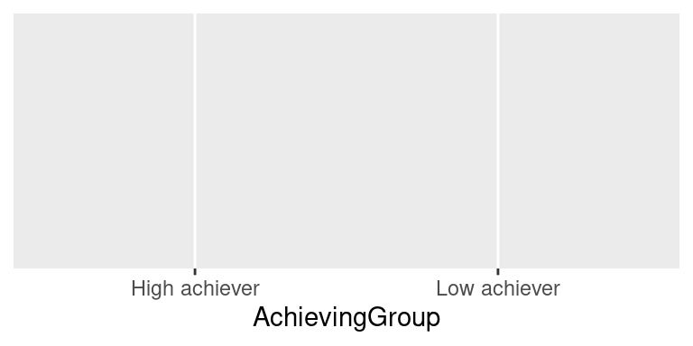
We now see that the x-axis has the two possible values of AchievingGroup: “High achiever” and “Low achiever”. We still need to tell ggplot2 the type of chart we want to use to plot the number of students of each type. To do that we need to add a geometrical (geom) component to our plot in which we specify that we want a bar chart. We do it by adding a + sign after our call to ggplot and calling geom_bar() (the name of the geometry that represents a bar chart).
ggplot(df, aes(x = AchievingGroup)) + geom_bar() Now the plot can actually be called a plot. Notice that we have not specified what we want to plot in the y-axis. When not specified, ggplot2 assumes that we want to use the count of rows.
We also notice that the bars are in the wrong order. By default, ggplot2 orders the values in an ascending way (alphabetically in the case of text values). If we want to enforce our own order, we need to convert the AchievingGroup column of df into a factor and provide the ordered list of values to the levels argument.
df$AchievingGroup = factor(df$AchievingGroup,
levels = c("Low achiever", "High achiever"))If we generate our plot again, we see that the bars are now in the order we want them to be:
ggplot(df, aes(x = AchievingGroup)) + geom_bar() 
5.5 Adding the color scale
We still need to color our bar chart according to students’ activity level. We do that by mapping the fill aesthetic to the ActivityLevel column inside the aes. When we provide the fill property, ggplot will automatically create the appropriate legend.
ggplot(df, aes(x = AchievingGroup, fill = ActivityGroup)) + geom_bar()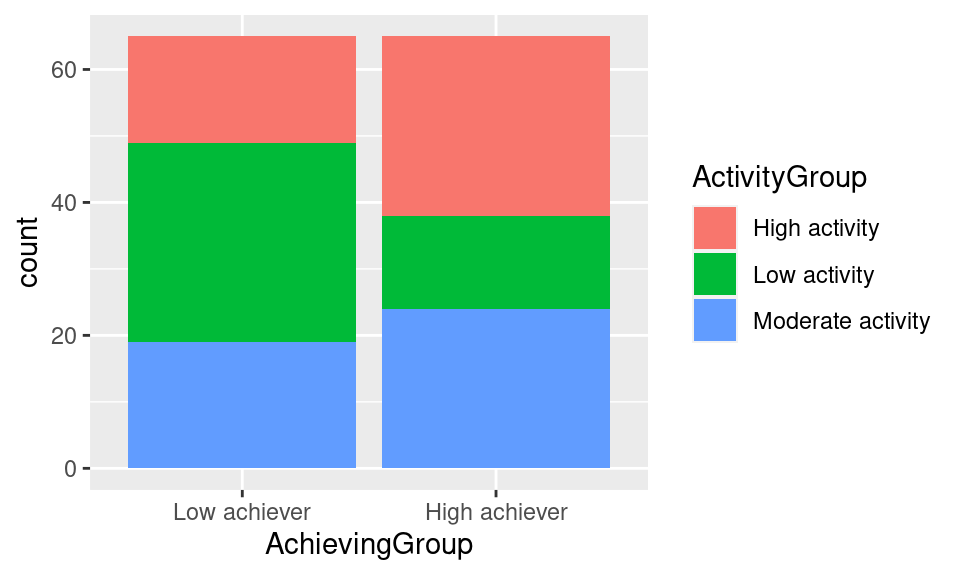
Again, we need to change the order of our legend so that it follows the logical semantic order for the activity levels (low-moderate-high):
df$ActivityGroup = factor(df$ActivityGroup,
levels = c("Low activity", "Moderate activity", "High activity"))If we generate the plot again, we see now that the legend is in the right order:
ggplot(df, aes(x = AchievingGroup, fill = ActivityGroup)) + geom_bar()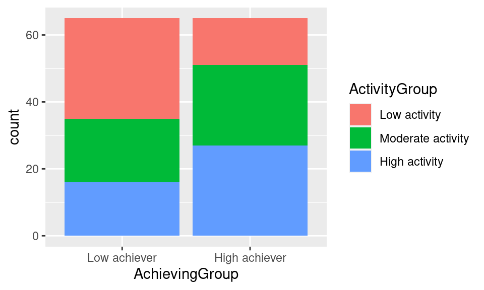
However, the stacks are still not in the right order, being the low activity students at the top of the bar, and the high activity students at the bottom, which might be counter-intuitive. To change this, we need to reverse the position of the bar using position = position_stack(reverse = TRUE) inside geom_bar:
ggplot(df, aes(x = AchievingGroup, fill = ActivityGroup)) +
geom_bar(position = position_stack(reverse = TRUE))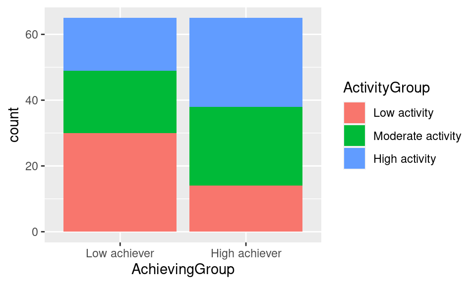
We are getting closer but the color scheme does not quite match our intended result. To add a color scheme to our plot we need to add a scale layer. In this case, the scale is for the fill property, which is the color of the bars in our chart. There are many ways to specify the color scheme. One option is to use sequential colors from the same palette. For that we add a new layer to our plot named scale_fill_brewer and we pass the palette that we want as an argument. For example, palette number 15 would look like this:
ggplot(df, aes(x = AchievingGroup, fill = ActivityGroup)) +
geom_bar(position = position_stack(reverse = TRUE)) +
scale_fill_brewer(palette = 15)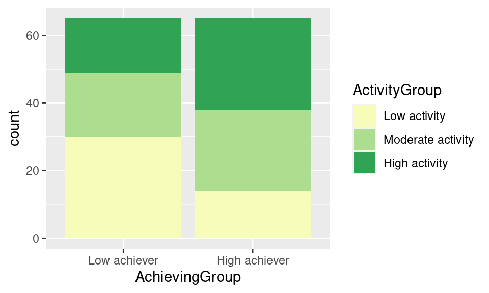
Another option is to provide a manual scale with the colors of our choice. For that we use scale_fill_manual and specify a values vector as an argument. You need to specify as many colors as unique elements in your scale. In this case we have three activity groups (for low, moderate or high activity), so we must provide three colors. There are tons of resources online where you can find or create your own palettes (e.g., Coolors, Adobe Color or Lospec). You have to provide the hexadecimal code of each color or the official color name recognized by R. Below is an example:
ggplot(df, aes(x = AchievingGroup, fill = ActivityGroup)) +
geom_bar(position = position_stack(reverse = TRUE)) +
scale_fill_manual(values = c("#ef6461", "#7AE7C7", "#8E518D")) 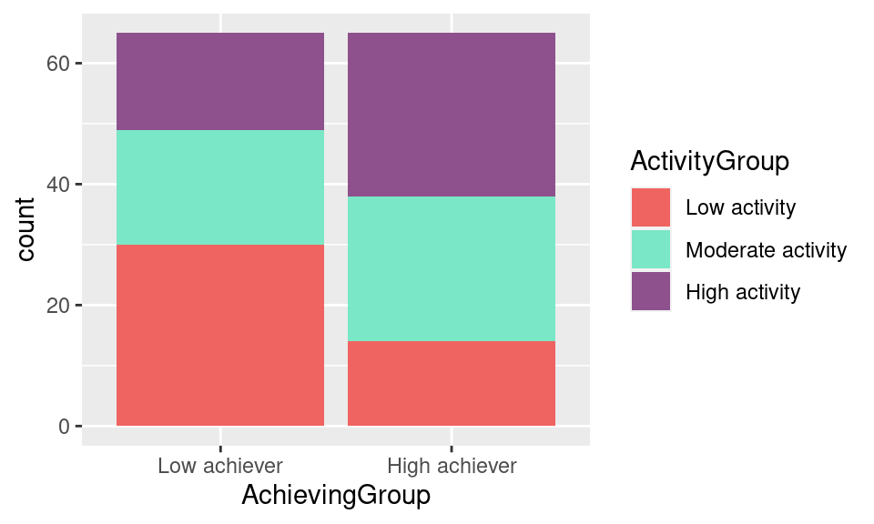
Lastly, a very common color scale used is Viridis. It is designed to be perceived by viewers with common forms of color blindness. To use it in our plot we just add scale_fill_viridis_d().
ggplot(df, aes(x = AchievingGroup, fill = ActivityGroup)) +
geom_bar(position = position_stack(reverse = TRUE)) +
scale_fill_viridis_d() 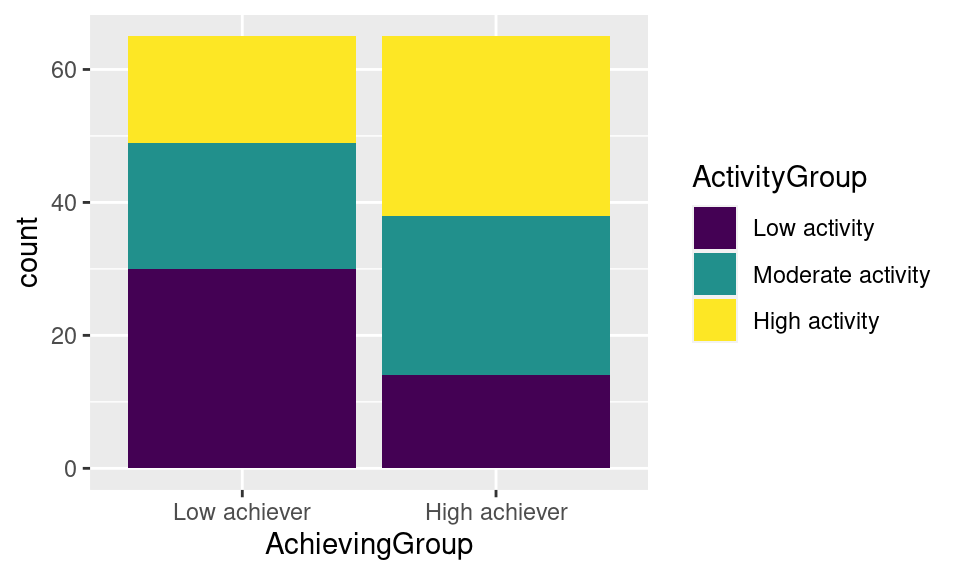
Viridis is the palette we need to replicate our target plot. However, the order of the color needs to be reversed so the most dense color represents the higher activity level. We do this by reversing the direction of the palette as follows:
ggplot(df, aes(x = AchievingGroup, fill = ActivityGroup)) +
geom_bar(position = position_stack(reverse = TRUE)) +
scale_fill_viridis_d(direction = -1) 5.6 Working with themes
Now that the geometry and color scheme of the bars looks like our initial plot, we notice that there are still some differences. An important one is the grey background of the plot. To change the general appearance of our plot, we may use the ggplot2 themes. Below are some examples:
ggplot(df, aes(x = AchievingGroup, fill = ActivityGroup)) +
geom_bar(position = position_stack(reverse = TRUE)) +
scale_fill_viridis_d(direction = -1) + theme_dark()
ggplot(df, aes(x = AchievingGroup, fill = ActivityGroup)) +
geom_bar(position = position_stack(reverse = TRUE)) +
scale_fill_viridis_d(direction = -1) + theme_classic()
ggplot(df, aes(x = AchievingGroup, fill = ActivityGroup)) +
geom_bar(position = position_stack(reverse = TRUE)) +
scale_fill_viridis_d(direction = -1) + theme_void()
ggplot(df, aes(x = AchievingGroup, fill = ActivityGroup)) +
geom_bar(position = position_stack(reverse = TRUE)) +
scale_fill_viridis_d(direction = -1) + theme_minimal()
theme_dark (top left), theme_classic (top right), theme_void (bottom left), and theme_minimal (bottom right)We have theme_dark with a dark background and border, theme_classic with thick axes and no grid lines, theme_void which is completely empty, and theme_minimal with a minimalistic look. There are more available in the ggplot2 documentation and even more third-party implementations. To recreate our goal plot, we select the theme_minimal. To avoid having to add the theme to all of our plots from now on, we can set a default theme for our whole project by using theme_set:
theme_set(theme_minimal())Notice how now we get theme_minimal even when we do not specify it in our code:
ggplot(df, aes(x = AchievingGroup, fill = ActivityGroup)) +
geom_bar(position = position_stack(reverse = TRUE)) +
scale_fill_viridis_d(direction = -1)
minimal by default5.7 Changing the axis ticks
You may have not noticed that another difference with our goal plot is the ticks in our y-axis. In the goal plot we count 10 by 10, whereas in our last plot we do so 20 by 20. Just like we modified the scale of the fill aesthetic when we changed the color of our bars, we can also modify the y aesthetic to adjust to our needs. We use the scale_y_continuous layer and we try different number of breaks (n.breaks), until we find what we like best:
ggplot(df, aes(x = AchievingGroup, fill = ActivityGroup)) +
geom_bar(position = position_stack(reverse = TRUE)) +
scale_fill_viridis_d(direction = -1) +
scale_y_continuous(n.breaks = 15)
ggplot(df, aes(x = AchievingGroup, fill = ActivityGroup)) +
geom_bar(position = position_stack(reverse = TRUE)) +
scale_fill_viridis_d(direction = -1) +
scale_y_continuous(n.breaks = 3)
ggplot(df, aes(x = AchievingGroup, fill = ActivityGroup)) +
geom_bar(position = position_stack(reverse = TRUE)) +
scale_fill_viridis_d(direction = -1) +
scale_y_continuous(n.breaks = 7)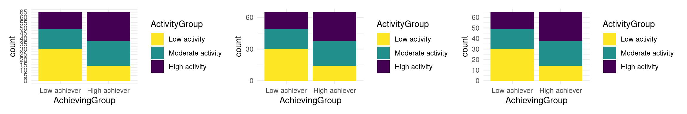
We choose 7 breaks to obtain our desired result.
5.8 Titles and labels
Our plot is still missing some slight modifications to be 100% equal to the original one. For instance, the axes’ titles are not the same. To specify the y-axis label, we add a new layer to our plot named ylab and we pass a string with our desired label “Number of students”:
ggplot(df, aes(x = AchievingGroup, fill = ActivityGroup)) +
geom_bar(position = position_stack(reverse = TRUE)) +
scale_fill_viridis_d(direction = -1) +
scale_y_continuous(n.breaks = 7) +
ylab("Number of students") 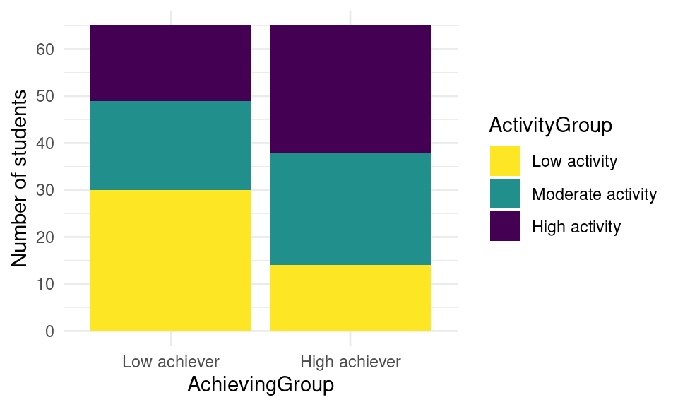
We do the same for the x-axis using xlab, and for the legend using labs:
ggplot(df, aes(x = AchievingGroup, fill = ActivityGroup)) +
geom_bar(position = position_stack(reverse = TRUE)) +
scale_fill_viridis_d(direction = -1) +
scale_y_continuous(n.breaks = 7) +
ylab("Number of students") +
xlab("Achievement group") +
labs(fill = "Activity level")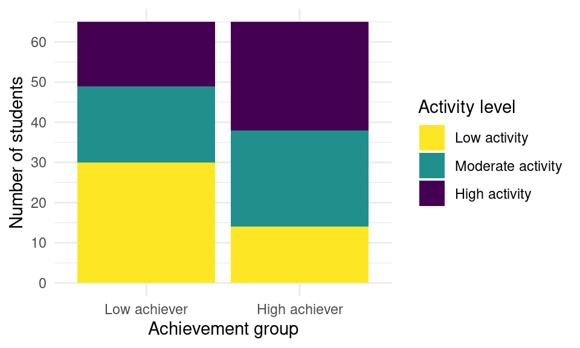
More importantly, we are missing the overall title of the plot. To add it we use ggtitle and we pass our intended plot title “Activity level by achievement group”. Keep in mind that, whenever possible, it is better to add a caption to the image rather than a title on the plot. A caption is more accessible for visually impaired users since it is compatible with screen readers. In scientific papers, it is also more common to have a Figure caption than a title within the plot. In social media, it is frequent to see the title on the plot as images are often shared without context. However, many social media platforms allow to provide an alternative text which is what screen readers will read as a substitute for the image, and that is also the case in learning analytics dashboards.
ggplot(df, aes(x = AchievingGroup, fill = ActivityGroup)) +
geom_bar(position = position_stack(reverse = TRUE)) +
scale_fill_viridis_d(direction = -1) +
scale_y_continuous(n.breaks = 7) +
ylab("Number of students") +
xlab("Achievement group") +
labs(fill = "Activity level") +
ggtitle("Activity level by achievement group") 
5.9 Other cosmetic modifications
Lastly, we need to do some slight modifications to the overall appearance of the plot. We do this through the generic theme function of ggplot2. We first modify the position of the legend by setting legend.position to “bottom”. We then increase the size of the axes titles, by setting axis.title to element_text(size = 12). Finally, we make the plot title bigger as well and put it in bold by setting plot.title to element_text(size = 15, face = "bold")). With these last changes, we have an exact replica of our original plot.
ggplot(df, aes(x = AchievingGroup, fill = ActivityGroup)) +
geom_bar(position = position_stack(reverse = TRUE)) +
scale_fill_viridis_d(direction = -1) +
scale_y_continuous(n.breaks = 7) +
ylab("Number of students") +
xlab("Achievement group") +
labs(fill = "Activity level") +
ggtitle("Activity level by achievement group") +
theme(legend.position = "bottom",
axis.title = element_text(size = 12),
plot.title = element_text(size = 15, face = "bold"))
5.10 Saving the plot
Since we have obtained the desired result, we may now save it as an image to be able to use it elsewhere. For that, we first need to assign the plot to a variable (e.g., myplot).
myplot <- ggplot(df, aes(x = AchievingGroup, fill = ActivityGroup)) +
geom_bar(position = position_stack(reverse = TRUE)) +
scale_fill_viridis_d(direction = -1) +
scale_y_continuous(n.breaks = 7) +
ylab("Number of students") +
xlab("Achievement group") +
labs(fill = "Activity level") +
ggtitle("Activity level by achievement group") +
theme(legend.position = "bottom", axis.title = element_text(size = 12),
plot.title = element_text(size = 15, face = "bold"))We then use ggsave to save the plot to our filesystem. We need to specify the file path (including the extension, such as PNG, JPEG, etc.) where we want to save the plot (e.g., “bar.png”) as the first argument and pass the variable where we saved our plot (myplot) as a second argument. If we do not do this, ggplot2 assumes we want to save the latest plot that we created. Lastly, we may specify the width, height and resolution (dpi) of our plots. If we are submitting our figure to a scientific journal, we probably need a high resolution image. If we are using the figure in social media, we do not want the resolution to be so high as it would take a long time to load.
ggsave("bar.png", myplot, width = 10000, height = 5000, units = "px", dpi = 900)Throughout this section, we have learned how we can create a plot from scratch using only the ggplot2 library and a simple dataset. We have seen the many customization possibilities (theme, scales, titles) that we can achieve using the different plot components without needing to rely on external tools for retouching our final graph. In the next section we will learn about new types of plots that might be more suitable for other types of data and their customization possibilities.
6 Types of plots
The ggplot2 library offers many types of plots (or geoms) that you can choose from to visualize your data in several ways. In this section, we go over some of the most common types and present examples using students’ learning data.
6.1 Bar plot
We have seen how to construct a bar plot in the previous section as an example of how to use ggplot2. But when should we use a bar plot? Bar plots are useful when we want to represent counts or any numerical variable broken down by categories. The y-axis would represent the count (or other continuous numerical variable) and the x-axis would represent the categories. Keep in mind that if the categories follow a natural order, the x-axis should respect it (for example: “Morning”, “Afternoon”, “Evening”; or “Children”, “Adults”, “Elders”). Otherwise, you can just order the x-axis alphabetically or from highest to lowest value in the y-axis.
ggplot(df, aes(x = AchievingGroup)) + geom_bar(position = position_stack(reverse = TRUE)) 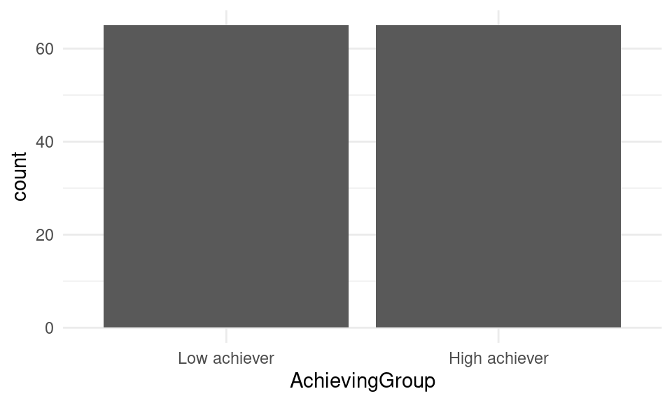
Remember that you can add a “third dimension” to the plot by using the fill property. This is known as a ‘stacked’ bar chart and helps highlight the proportion of, in this case, students’ activity level (ActivityGroup).
ggplot(df, aes(x = AchievingGroup, fill = ActivityGroup)) +
scale_fill_viridis_d(direction = -1) +
geom_bar(position = position_stack(reverse = TRUE)) If we care more about the actual number rather than the proportion of students with each activity level, instead of a stacked bar chart we can keep each ‘stack’ as a whole bar of their own. This plot is very useful to compare values among categories. We accomplish this by passing the position argument with the value “dodge” to the geom_bar component:
ggplot(df, aes(x = AchievingGroup, fill = ActivityGroup)) +
scale_fill_viridis_d(direction = -1) + geom_bar(position = "dodge") 
We can now see that the highest group is represented by the low achievers with low activity, followed by the high achievers with high activity.
6.2 Histogram
Histograms allow us to represent the distribution of a single continuous variable. It is inherently a bar chart, but instead of each bar representing the count of a single category, it represents the count of a range of values in the x-axis (what is known as a bin). Let us, for example, create a histogram for students’ online activity. Specifically, let us see the distribution of the number of accesses to the course main page online.
If we look at our dataset, we can see that the name of the variable that we are interested in is Frequency.Course_view:
head(df)# A tibble: 130 × 37
User Name Surname Origin Gender Birthdate Location Employment
<chr> <chr> <chr> <chr> <chr> <chr> <chr> <chr>
1 00a05cc62 Wan Tan Malaysia M 12.12.19… Remote None
2 042b07ba1 Daniel Tromp Aruba M 28.5.1999 Remote None
3 046c35846 Sarah Schmit Luxembourg F 25.4.1997 On camp… None
4 05b604102 Lian Abdullah Yemen F 19.11.19… On camp… None
5 0604ff3d3 Nina Borg Malta F 13.6.1994 On camp… None
6 077584d71 Mohamed Gamal Egypt M 13.7.1998 On camp… Part-time
7 081b100cf Maximilian Gruber Austria M 20.12.19… On camp… None
8 0857b3d8e Hugo Pérez Spain M 22.12.19… On camp… None
9 0af619e4b Aylin Barat Kazakhstan F 14.8.1995 On camp… None
10 0ec99ce96 Polina Novik Belarus F 9.10.1996 On camp… None
# ℹ 120 more rows
# ℹ 29 more variables: Frequency.Applications <dbl>,
# Frequency.Assignment <dbl>, Frequency.Course_view <dbl>,
# Frequency.Feedback <dbl>, Frequency.General <dbl>,
# Frequency.Group_work <dbl>, Frequency.Instructions <dbl>,
# Frequency.La_types <dbl>, Frequency.Practicals <dbl>,
# Frequency.Social <dbl>, Frequency.Ethics <dbl>, Frequency.Theory <dbl>, …To create a histogram for this variable we may use the geom_histogram feature of ggplot2. We just pass our dataset and map the Frequency.Course_view variable to the x axis, and we add the geometry geom_histogram:
ggplot(df, mapping = aes(x = Frequency.Total)) + geom_histogram()
We can provide our own value to the bins argument in geom_histogram to personalize how many bins we want in our plot:
ggplot(df, mapping = aes(x = Frequency.Total)) +
geom_histogram(bins = 50)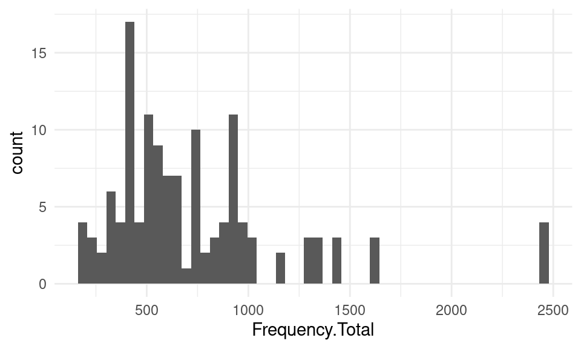
We can also personalize the color scheme using fill for the background of the bars:
ggplot(df, mapping = aes(x = Frequency.Total)) +
geom_histogram(bins = 20, fill = "deeppink" ) +
scale_x_continuous(n.breaks = 10) 
The histogram allows us to acknowledge that most students had around 400-500 events, with another peak around 900-1000. Students with more than 1000 events were rare.
6.3 Line plot
Another very widely used type of plot is the line plot. Like the histogram, it is also appropriate when we have both a numerical continuous x-axis and y-axis but it gives us a bit more liberty of what we plot and it is suitable for when we want to plot several series of data together. A very common scenario for a line plot is when we deal with timelines and we wish to visualize the evolution of a certain variable over time. Let us, for instance, plot the students’ daily events in the LMS throughout the course, a common plot in learning analytics dashboards. In the dataset that we have been using, we have the total count of events per user but not the timestamp of each event. We need to import the original event data from the dataset:
ev_url <- "https://github.com/sonsoleslp/labook-data/raw/main/1_moodleLAcourse/Events.xlsx"
events <- import(ev_url)The Events.xlsx file contains all the actions that the students enrolled in this course performed in the LMS (Action) with their corresponding timestamp (timecreated): clicking on a lecture file, viewing the assignment instructions, etc.
head(events)# A tibble: 95,626 × 7
Event.context user timecreated Component Event.name Log Action
<chr> <chr> <dttm> <chr> <chr> <chr> <chr>
1 Assignment: Fina… 9d74… 2019-10-26 09:37:12 Assignme… Course mo… Assi… Assig…
2 Assignment: Fina… 9148… 2019-10-26 09:09:34 Assignme… The statu… Assi… Assig…
3 Assignment: Fina… 278a… 2019-10-18 12:05:28 Assignme… Course mo… Assi… Assig…
4 Assignment: Fina… 53d6… 2019-10-19 13:28:37 Assignme… The statu… Assi… Assig…
5 Assignment: Fina… aab7… 2019-10-15 23:38:13 Assignme… Course mo… Assi… Assig…
6 Assignment: Fina… 82ed… 2019-10-18 17:51:43 Assignme… Course mo… Assi… Assig…
7 Assignment: Fina… 4178… 2019-10-18 15:22:56 Assignme… Course mo… Assi… Assig…
8 Assignment: Fina… 82ed… 2019-10-22 13:46:51 Assignme… The statu… Assi… Assig…
9 Assignment: Fina… f2e9… 2019-10-15 14:58:17 Assignme… Submissio… Assi… Assig…
10 Assignment: Fina… 53d6… 2019-10-19 13:28:38 Assignme… Course mo… Assi… Assig…
# ℹ 95,616 more rowsInstead of mapping timecreated directly to the x aesthetic, we can plot the timeline of the number of events per day by using as.Date(timecreated) and the geom_line geometry from ggplot2. Notice that, unlike geom_bar, if we do not provide a y aesthetic and want ggplot2 to count the number of events per day for us, we need to make it explicit by passing the stat argument with value "count" to geom_line.
ggplot(events, aes(x = as.Date(timecreated) )) + geom_line(stat = "count")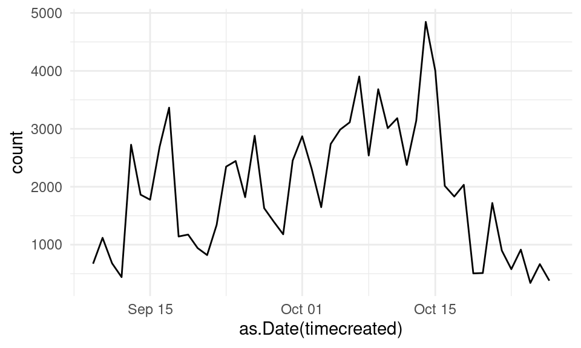
The line plot of students’ events allows us to identify periods of increased activity. We can see that it was low at the very beginning of the course, with some peaks corresponding to the assignment deadlines and one last peak for the final project. When the course is over, activity begins to decrease.
To make our plot more aesthetically pleasing, we can customize the color and line width. We do so by tweaking the color and linewidth properties of the geom_line. We can also fix the axes’ titles as we learned before. For example:
ggplot(events, aes(x = as.Date(timecreated) )) +
geom_line(stat = "count", color = "turquoise", linewidth = 2) +
xlab ("Date") + ylab("Number of events")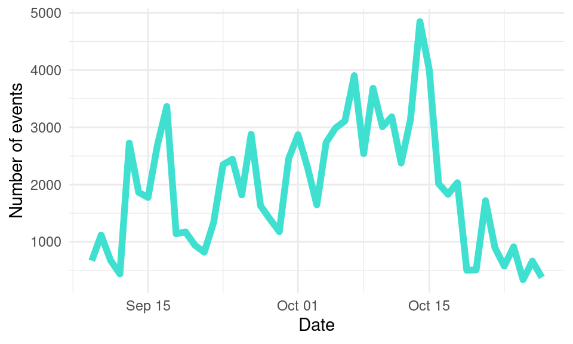
We can also add a point to mark each date using geom_point:
ggplot(events, aes(x = as.Date(timecreated) )) +
geom_line(stat = "count", color = "turquoise", linewidth = 1.5) +
geom_point(stat = "count", color = "purple", size = 2, stroke = 1) +
xlab ("Date") +
ylab("Number of events")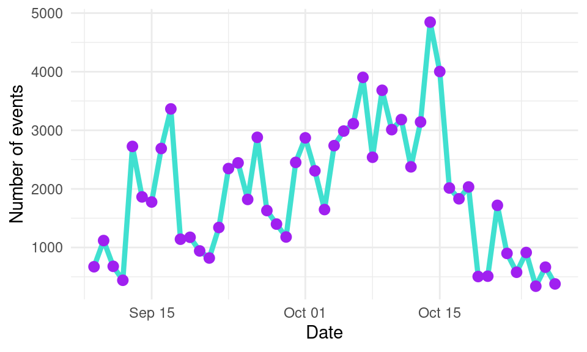
Besides visualizing the events for all the students of the course, we can pinpoint specific students to follow their progress and offer them personalized support. To do this, we would need to filter our data before handing it over to ggplot2. We can filter the data using the filter function from dplyr, as we learned in Chapter 4 [29]. We first install dplyr if we do not have it:
install.packages("dplyr")Then, we import it as usual:
library(dplyr)We can now filter the data and pass it on to ggplot2:
events |> filter(user == "9d744e5bf") |> ggplot(aes(x = as.Date(timecreated) )) +
geom_line(stat = "count", color = "turquoise", linewidth = 2) +
geom_point(stat = "count", color = "purple", size = 2, stroke = 1) +
xlab ("Date") +
ylab("Number of events")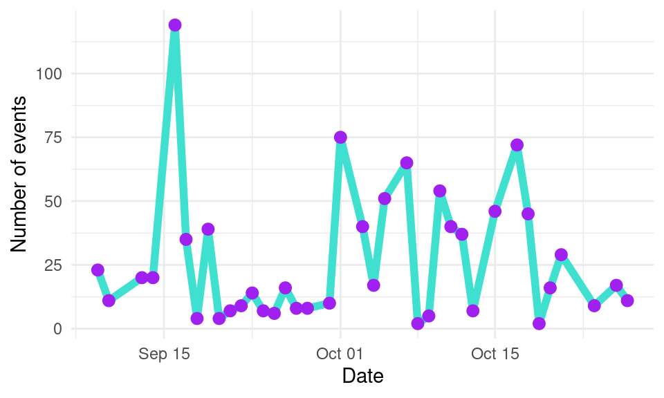
6.4 Jitter plots
In the previous plots we have seen aggregated information for all the cohort of students as well as information for a single student. However, in some occasions, it is very useful to see the general picture while accounting for possible individual differences. For example, using our original df dataset, we can plot the number of events on the LMS, differentiating between high achievers and low achievers.
One option is to use geom_point to represent each students’ count of events as a single point. To do this, we map the Event column to the x aesthetic, the Frequency column to the y aesthetic, and the User column to the group aesthetic:
ggplot(df, aes(x = AchievingGroup, y = Frequency.Total)) +
geom_point() +
xlab("Achieving group") +
ylab("Number of events") +
theme(legend.position = "bottom",
legend.text = element_text(size = 7),
legend.title = element_blank())
geom_pointHowever, there are many points that overlap. If we use geom_jitter instead, we take advantage of the horizontal gap between the event names to spread the points and avoid the overlap:
ggplot(df, aes(x = AchievingGroup, y = Frequency.Total)) +
geom_jitter() +
xlab("Achieving group") +
ylab("Number of events") +
theme(legend.position = "bottom",
legend.text = element_text(size = 7),
legend.title = element_blank())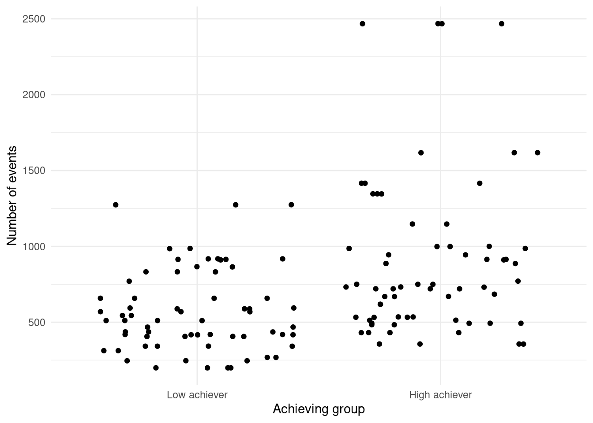
geom_jitterThe plot shows that students that are high achievers generally have a higher number of events than low achievers.
6.5 Box plot
When we have too many data points, it is often more useful to visualize summary statistics instead of all the points. Box plots are very useful in summarizing data distributions. We can create a box plot for the number of events per achievement group using geom_boxplot:
ggplot(df, aes(x = AchievingGroup, y = Frequency.Total)) + geom_boxplot() +
xlab("Achieving group") + ylab("Number of events") 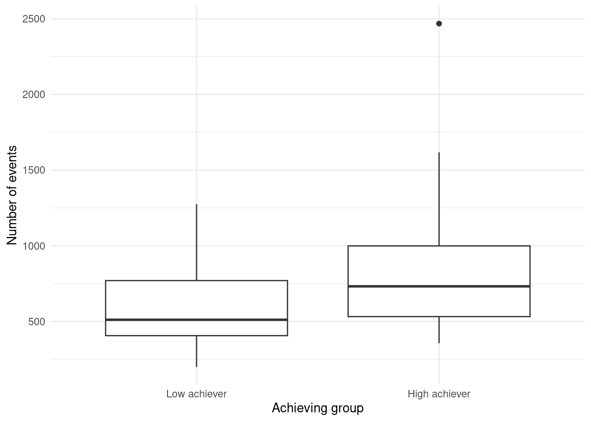
The lower hinge of each box indicates the 25% percentile, the thick middle line is the median, and the top hinge is the top 75% percentile. The upper whisker extends from the hinge up to the maximum value within 1.5 * IQR (inter-quantile range), whereas the lower whisker extends to the minimum value within 1.5 * IQR of the hinge. The points outside the whisker represent outliers in the distribution (i.e., values outside of the 1.5 * IQR range). As the jitter plot already hinted, the median number of events is higher in the high achieving group.
6.6 Violin plot
We can also visualize the distribution of the number of events for each group using violin plots (geom_violin), but these are recommended when we have a large amount of data:
ggplot(df, aes(x = AchievingGroup, y = Frequency.Total)) + geom_violin() +
xlab("Achieving group") + ylab("Number of events") 
6.7 Scatter plots
The examples we have seen so far have dealt with plotting a single variable alone or divided in categories. Another common scenario is to investigate the direct relationship between two or more variables. Scatter plots are used to visualize how two numerical variables relate to each other. For example, we can use them to see how LMS activity relates to grades.
ggplot(df, aes(x = Frequency.Total, y = Final_grade)) +
geom_point() +
ylab("Final grade") + xlab("Number of events") 
In the plot, each point represents a student. Students at the right side of the plot represent students with higher activity, while students closer to the left side of the plot, represent students with lower activity. At the same time, students with low grades are closer to the bottom of the plot, while students with high grades are closer to the top. Overall, se see an upward trend whereby students with higher activity indeed obtain better grades.
We can add another dimension by coloring points according to another variable. For example, we can color the points according to high vs. low achievers, so we can now where the division between the two groups is:
ggplot(df, aes(x = Frequency.Total, y = Final_grade, color = AchievingGroup)) +
geom_point() +
ylab("Final grade") + xlab("Number of events") +
labs(color = "Achievement")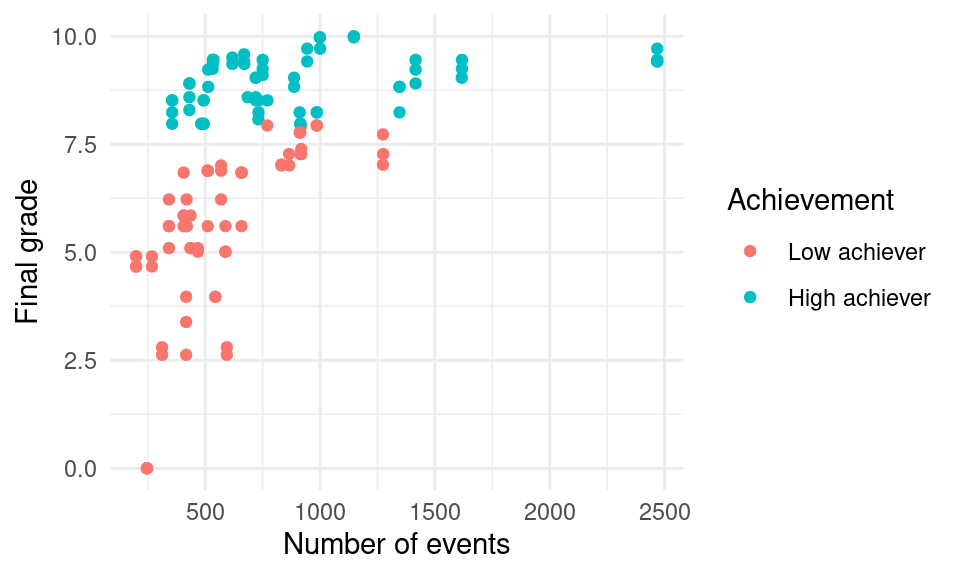
We can add yet another dimension by mapping the size aesthetic to another variable, for example Frequency.Group_work which represents the number of events related to group work.
ggplot(df, aes(x = Frequency.Total, y = Final_grade,
fill = AchievingGroup, size = Frequency.Group_work)) +
geom_point(color = "black", pch = 21) +
scale_size_continuous(range = c(1, 7)) +
ylab("Final grade") + xlab("Number of events") +
labs(size = "Group work", fill = "Achievement")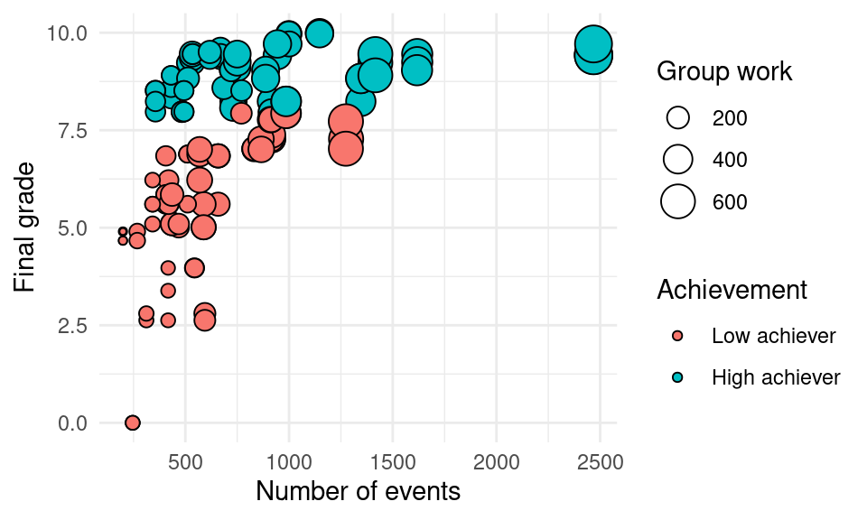
7 Advanced features
7.1 Plot grids
Sometimes, adding all the information in a single plot can be overwhelming and hard to interpret. For example, take a look at the following line plot that shows the number of events per day for each of the course online components:
ggplot(events, aes(x = as.Date(timecreated), color = Action )) +
scale_fill_viridis_d() +
geom_line(stat = "count") +
xlab("Date") +
ylab("Number of events")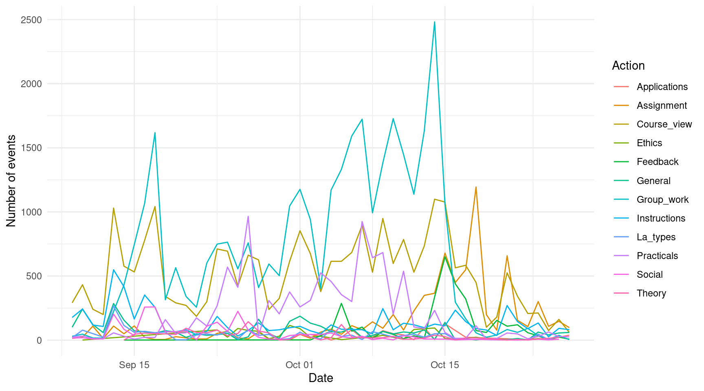
If we had only a few (2-5) lines, the plot would probably look very good, but as the number of categories grow, the plot becomes unintelligible. Instead of showing all the lines together, the plot would be easier to understand if each component had their own plot. To do this, instead of mapping the Action column to the color aesthetic, we add a new component to our plot using facet_wrap and we pass the name of the column as a character string ("Action"). We can change the geom_line to a geom_area to enhance the visualization.
ggplot(events, aes(x = as.Date(timecreated))) +
geom_area(stat = "count", fill = "turquoise", color = "black") +
facet_wrap("Action") +
xlab("Date") +
ylab("Number of events")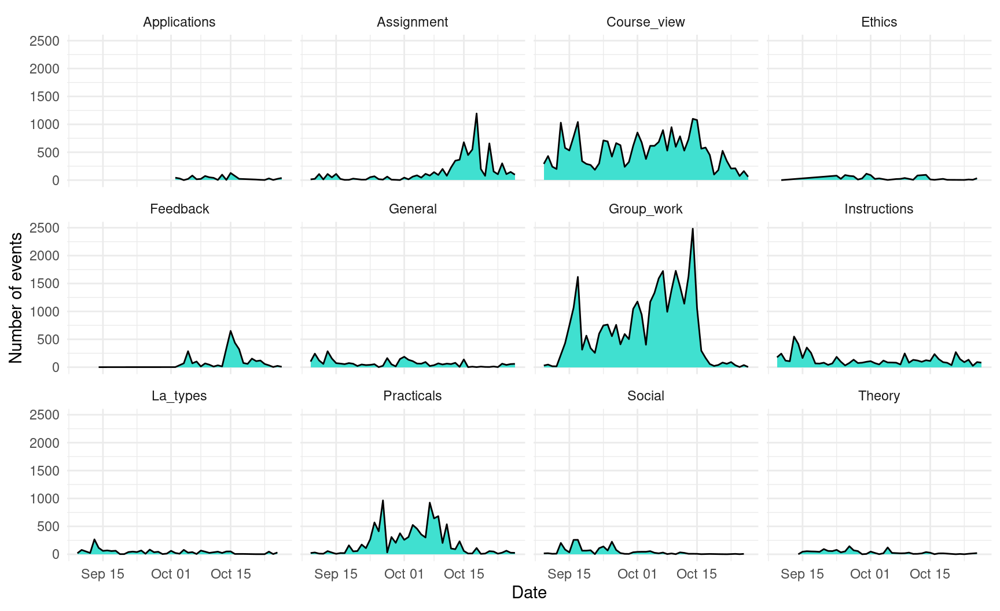
7.2 Combining multiple plots
In the previous example, we saw how to split a plot into multiple plots. But what happens if we want to combine multiple independent plots? For that purpose, we can use the library patchwork. Install it first if you do not have it already:
install.packages("patchwork")We import the patchwork library:
library(patchwork)We have to create the plots that we want to combine and assign each of them to a different variable. We can use previous examples from this chapter and assign them to variables named p1, p2, and p3.
p1 <- ggplot(df, aes(x = Frequency.Total, y = Final_grade)) +
geom_point() + ylab("Grade") +
xlab("Total number of events")
p2 <- ggplot(df, aes(x = AchievingGroup, fill = ActivityGroup )) + geom_bar(position = position_fill(reverse = T)) +
scale_fill_viridis_d(direction = -1) +
xlab("Achievement group") +
ylab("Number of events") +
labs(fill = "Activity level")
p3 <- ggplot(events, aes(x = as.Date(timecreated) )) +
geom_line(stat = "count", color = "turquoise", linewidth = 1.5) +
geom_point(stat = "count", color = "purple", size = 2, stroke = 1) +
xlab ("Date") +
ylab("Number of events")Now, if we add the three variables together separated by the + sign, the plots will be placed horizontally next to each other:
p1 + p2 + p3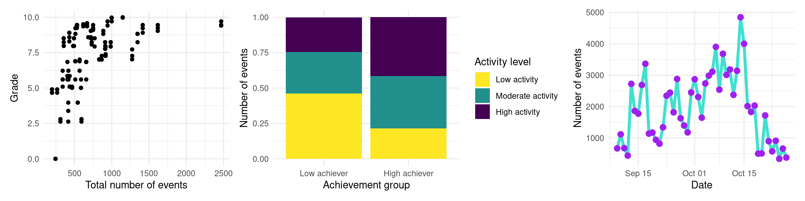
If we use the / character side instead, we lay them out vertically:
p1 / p2 / p3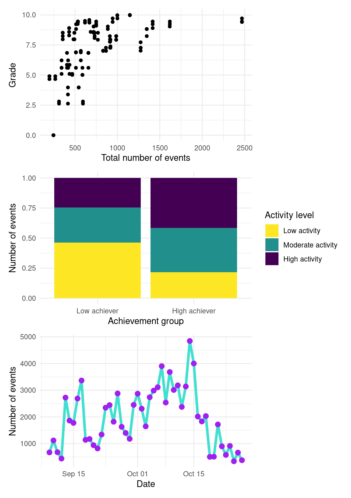
We can use combinations of both signs and even leave blank spaces as follows:
(p1 + p2) / ( p3 + plot_spacer())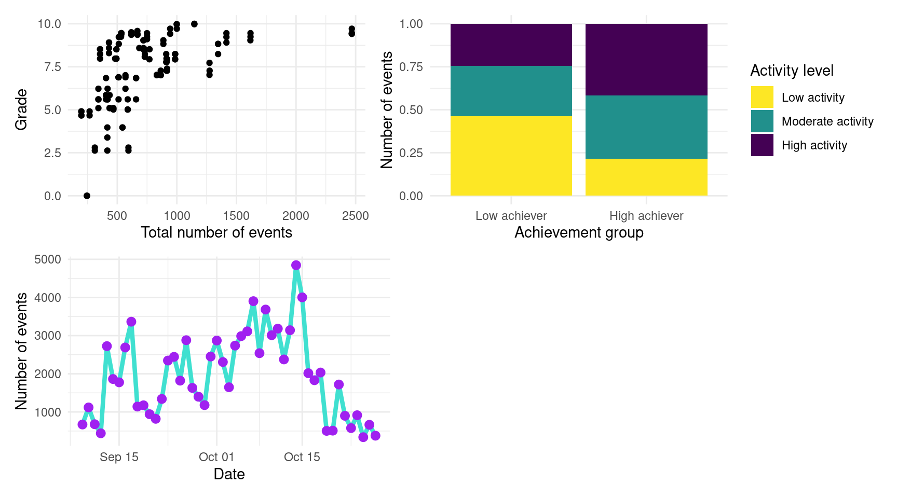
Putting plots side by side can be very useful to compare datasets and discuss the differences. Some publication venues limit the number of figures or pages of their articles, so combining several plots together can be very useful to overcome this limitation.
8 Creating tables with gt
We have seen earlier in this chapter multiple types of visualizations that are suitable for diverse scenarios in learning analytics. However, we must not forget the other main way of reporting results or metrics, i.e., tables. When we display a data frame in Rstudio, it is by default presented as a table, but we need to be able to extract this table and display it in a dashboard, a report or a scientific article. The library gt can help us with this endeavor. First, install it if you do not have it yet:
install.packages("gt")We then import it, as usual:
library(gt)Let us create a table, for example, to display the descriptive statistics of students’ events in the LMS. Using the events dataset, we first count the number of events of each type (Event.name) per student (user) using group_by and count from dplyr. We then group by Event.name only and use the summarize function, also from dplyr, to create the mean, and standard deviation of the number of events of each type per student, as we learned in Chapter 5 [30].
events |>
group_by(user, Action) |>
count() |>
group_by(Action) |>
summarize(Mean = mean(n), SD = sd(n))# A tibble: 12 × 3
Action Mean SD
<chr> <dbl> <dbl>
1 Applications 11.1 9.83
2 Assignment 56.7 34.1
3 Course_view 195. 152.
4 Ethics 11.7 10.7
5 Feedback 24.7 16.2
6 General 25.7 21.4
7 Group_work 252. 163.
8 Instructions 49.8 40.3
9 La_types 14.5 7.58
10 Practicals 77.1 33.8
11 Social 18.1 19.0
12 Theory 11.1 6.92Now that we have a data frame with the shape that we like, we can use gt to create the formatted table by simply adding gt to the pipeline of operations:
events |>
group_by(user, Action) |>
count() |>
group_by(Action) |>
summarize(Mean = mean(n), SD = sd(n)) |>
gt()| Action | Mean | SD |
|---|---|---|
| Applications | 11.07143 | 9.825022 |
| Assignment | 56.68462 | 34.129492 |
| Course_view | 194.56154 | 151.656947 |
| Ethics | 11.68182 | 10.669050 |
| Feedback | 24.71429 | 16.243082 |
| General | 25.73846 | 21.390991 |
| Group_work | 251.90769 | 162.899810 |
| Instructions | 49.80000 | 40.272213 |
| La_types | 14.54615 | 7.583245 |
| Practicals | 77.07692 | 33.751627 |
| Social | 18.10744 | 19.034093 |
| Theory | 11.10484 | 6.922120 |
We might add some tweaks by forcing the numerical columns to have two decimals and the first column to be aligned left. You can also apply themes to the table using the library gtExtras.
events |>
group_by(user, Action) |>
count() |>
group_by(Action) |>
summarize(Mean = mean(n), SD = sd(n)) |>
gt() |>
fmt_number(decimals = 2, columns = where(is.numeric)) |>
cols_align(align = "left", columns = 1)| Action | Mean | SD |
|---|---|---|
| Applications | 11.07 | 9.83 |
| Assignment | 56.68 | 34.13 |
| Course_view | 194.56 | 151.66 |
| Ethics | 11.68 | 10.67 |
| Feedback | 24.71 | 16.24 |
| General | 25.74 | 21.39 |
| Group_work | 251.91 | 162.90 |
| Instructions | 49.80 | 40.27 |
| La_types | 14.55 | 7.58 |
| Practicals | 77.08 | 33.75 |
| Social | 18.11 | 19.03 |
| Theory | 11.10 | 6.92 |
9 Discussion
The use of data visualization in the context of learning analytics has the potential to greatly enhance our understanding of student behavior and performance. By leveraging the power of tools such as ggplot2, instructors and researchers can create informative and visually appealing plots that highlight important patterns and trends in student activity, providing insights into factors that may be impacting student success. Whether through exploring patterns in LMS activity, tracking completion rates of online assignments, or monitoring engagement with course materials, data visualization can provide valuable insights that can inform instructional decisions and improve student outcomes. Ultimately, the use of data visualization in learning analytics can help to create a more data-driven and evidence-based approach to education, enabling educators to more effectively support their students’ success.
As we have already seen throughout the chapter, we often do not use the same plots when we are dealing with categorical variables or numerical variables; when we are plotting a single variable or two or more, etc. Moreover, on some occasions when we need very detailed information, a table might be needed instead of or in addition to a figure. Table 6.3 summarizes the most commonly used visualization types that we have seen throughout this chapter according to the number of variables and the data type. It also points to the ggplot2 geometry that is used to create each visualization.
| Number of variables | Variable types | Type of visualization | ggplot2 geometry |
|---|---|---|---|
| One variable | Continuous | Histogram | geom_hist() |
| Discrete | Bar chart | geom_bar() |
|
| Two or more variables | Both continuous | Scatter plot | geom_point() |
| One discrete time and | Line chart | geom_line() |
|
| one continuous | Area chart | geom_area() |
|
| One discrete and one | Bar chart | geom_bar() |
|
| continuous | Box plot | geom_boxplot() |
|
| Jitter plot | geom_jitter() |
||
| Violin plot | geom_violin() |
||
| Both discrete | Stacked bar chart | geom_bar() |
Another way to decide which visualization to use is to think what kind of story we want to tell or which aspect of our data we want to highlight. Figure 6.42 shows a flowchart that can help choose the most suitable visualization for your data. There are many other decision charts online made for this purpose. For example, “From Data to Viz”1 leads you to the most appropriate graph for your data and also links to the code to build it and lists common caveats you should avoid.
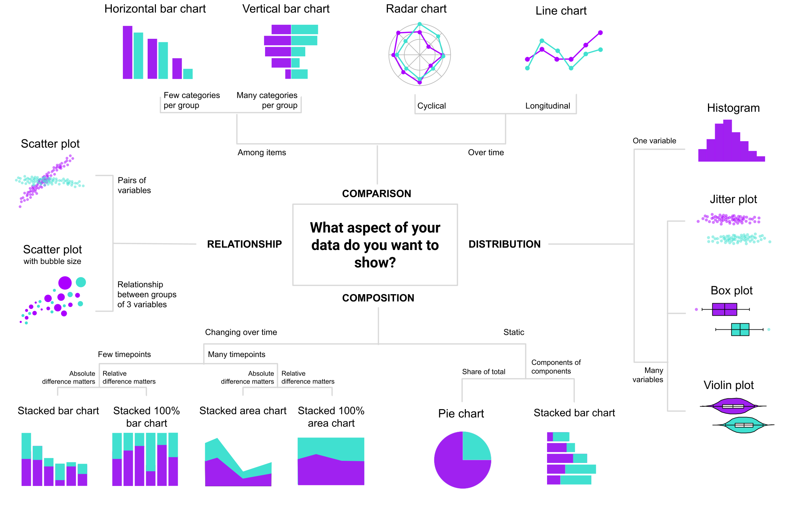
Throughout the rest of the book, we will see other forms of data visualization that are inherent to specific learning analytics methods. For example, in Chapter 15 [31], we will learn how to represent students’ discussions in the form of social networks, and in Chapter 10 [32], we will represent students’ sequences of activities using sequence analysis. The foundations learned in this chapter are key to understanding more complex visualizations in learning analytics and are, of course, transferable to other fields as well. We encourage readers to further their knowledge of data visualization by referring to the recommended resources in the next section. Especially readers that would like to take their visualizations to the next step should consider using shiny2, a web framework for R that allows creating fully interactive web apps for data analyses such as dashboards. By adding interactivity, instead of creating a static data report, final users can switch between datasets, filter the data in different ways, customize visualizations, etc.
10 Additional material
Wilke, Claus. 2019. Fundamentals of Data Visualization. O’Reilly. https://clauswilke.com/dataviz/.
Rahlf, Thomas. 2019 Data visualisation with R: 111 Examples. Springer. https://doi.org/10.1007/978-3-030-28444-2.
Wickham, Hadley, Danielle Navarro, and Thomas Lin Pedersen. 2019.
ggplot2: Elegant Graphics for Data Analysis (Use R) https://ggplot2-book.org/index.html.Sahin, Muhittin and Dirk Ifenthaler. 2021. Visualizations and Dashboards for Learning Analytics. Springer. https://doi.org/10.1007/978-3-030-81222-5.
Dougherty, Jack and Ilya Ilyankou. 2021. Hands-On Data Visualization: Interactive Storytelling from Spreadsheets to Code https://handsondataviz.org/spreadsheet.html.
From Data to Viz. https://www.data-to-viz.com/about.html
Wickham, Hadley. 2021. Mastering shiny. O’Reilly. https://mastering-shiny.org/.
References
1.
Kirk A (2012) Data visualization: A successful design process. Packt Publishing Ltd
2.
Demmans Epp C, Bull S (2015) Uncertainty representation in visualizations of learning analytics for learners: Current approaches and opportunities. IEEE Transactions on Learning Technologies 8:242–260. https://doi.org/10.1109/tlt.2015.2411604
3.
Jivet I, Scheffel M, Drachsler H, Specht M (2017) Awareness is not enough: Pitfalls of learning analytics dashboards in the educational practice. Springer International Publishing, pp 82–96
4.
Park Y, Jo I-H (2019) Factors that affect the success of learning analytics dashboards. Educational Technology Research and Development 67:1547–1571. https://doi.org/10.1007/s11423-019-09693-0
5.
Jivet I, Wong J, Scheffel M, Valle Torre M, Specht M, Drachsler H (2021) Quantum of choice: How learners’ feedback monitoring decisions, goals and self-regulated learning skills are related. LAK21: 11th International Learning Analytics and Knowledge Conference. https://doi.org/10.1145/3448139.3448179
6.
Sedrakyan G, Malmberg J, Verbert K, Järvelä S, Kirschner PA (2020) Linking learning behavior analytics and learning science concepts: Designing a learning analytics dashboard for feedback to support learning regulation. Computers in Human Behavior 107:105512. https://doi.org/10.1016/j.chb.2018.05.004
7.
Martinez-Maldonado R, Echeverria V, Fernandez Nieto G, Buckingham Shum S (2020) From data to insights: A layered storytelling approach for multimodal learning analytics. Proceedings of the 2020 CHI Conference on Human Factors in Computing Systems. https://doi.org/10.1145/3313831.3376148
8.
de Freitas S, Gibson D, Alvarez V, Irving L, Star K, Charleer S, Verbert K (2017) How to use gamified dashboards and learning analytics for providing immediate student feedback and performance tracking in higher education. Proceedings of the 26th International Conference on World Wide Web Companion - WWW ’17 Companion. https://doi.org/10.1145/3041021.3054175
9.
Bodily R, Kay J, Aleven V, Jivet I, Davis D, Xhakaj F, Verbert K (2018) Open learner models and learning analytics dashboards. Proceedings of the 8th International Conference on Learning Analytics and Knowledge. https://doi.org/10.1145/3170358.3170409
10.
Susnjak T, Ramaswami GS, Mathrani A (2022) Learning analytics dashboard: a tool for providing actionable insights to learners. International Journal of Educational Technology in Higher Education 19: https://doi.org/10.1186/s41239-021-00313-7
11.
Bodily R, Verbert K (2017) Review of research on student-facing learning analytics dashboards and educational recommender systems. IEEE Transactions on Learning Technologies 10:405–418. https://doi.org/10.1109/tlt.2017.2740172
12.
Valle N, Antonenko P, Dawson K, Huggins-Manley AC (2021) Staying on target: A systematic literature review on learner-facing learning analytics dashboards. British Journal of Educational Technology. https://doi.org/10.1111/bjet.13089
13.
Perez-Alvarez R, Jivet I, Perez-Sanagustin M, Scheffel M, Verbert K (2022) Tools designed to support self-regulated learning in online learning environments: A systematic review. IEEE Transactions on Learning Technologies 15:508–522. https://doi.org/10.1109/tlt.2022.3193271
14.
Matcha W, Uzir NA, Gasevic D, Pardo A (2020) A systematic review of empirical studies on learning analytics dashboards: A self-regulated learning perspective. IEEE Transactions on Learning Technologies 13:226–245. https://doi.org/10.1109/tlt.2019.2916802
15.
Cheng J, Lei J (2020) A description of students’ commenting behaviours in an online blogging activity. E-Learning and Digital Media 18:209–225. https://doi.org/10.1177/2042753020954971
16.
Duan X, Wang C, Rouamba G (2022) Designing a learning analytics dashboard to provide students with actionable feedback and evaluating its impacts. Proceedings of the 14th International Conference on Computer Supported Education. https://doi.org/10.5220/0011116400003182
17.
Leeuwen A van, Rummel N (2020) Comparing teachers’ use of mirroring and advising dashboards. Proceedings of the Tenth International Conference on Learning Analytics & Knowledge. https://doi.org/10.1145/3375462.3375471
18.
Isaias P, Backx Noronha Viana A (2020) On the design of a teachers’ dashboard: Requirements and insights. Springer International Publishing, pp 255–269
19.
Verbert K, Govaerts S, Duval E, Santos JL, Van Assche F, Parra G, Klerkx J (2013) Learning dashboards: an overview and future research opportunities. Personal and Ubiquitous Computing. https://doi.org/10.1007/s00779-013-0751-2
20.
Chavan P, Mitra R (2022) Tcherly: Journal of Learning Analytics 9:125–151. https://doi.org/10.18608/jla.2022.7555
21.
Lopez-Pernas S, Gordillo A, Barra E, Quemada J (2021) Escapp: A web platform for conducting educational escape rooms. IEEE Access 9:38062–38077. https://doi.org/10.1109/access.2021.3063711
22.
López Tavares D, Perkins K, Kauzmann M, Aguirre Velez C (2019) Towards a teacher dashboard design for interactive simulations. Journal of Physics: Conference Series 1287:012055. https://doi.org/10.1088/1742-6596/1287/1/012055
23.
Li Y, Zhang M, Su Y, Bao H, Xing S (2022) Examining teachers’ behavior patterns in and perceptions of using teacher dashboards for facilitating guidance in CSCL. Educational technology research and development 70:1035–1058. https://doi.org/10.1007/s11423-022-10102-2
24.
Jivet I, Scheffel M, Specht M, Drachsler H (2018) License to evaluate. Proceedings of the 8th International Conference on Learning Analytics and Knowledge. https://doi.org/10.1145/3170358.3170421
25.
Martinez-Maldonado R, Pardo A, Mirriahi N, Yacef K, Kay J, Clayphan A (2015) The LATUX workflow. Proceedings of the Fifth International Conference on Learning Analytics And Knowledge. https://doi.org/10.1145/2723576.2723583
26.
Wickham H (2016) ggplot2: Elegant graphics for data analysis. Springer-Verlag New York
27.
Wilkinson L (1999) The grammar of graphics. Springer New York
28.
López-Pernas S, Saqr M, Del Rio L, Conde J (2024) A broad collection of datasets for educational research training and application. In: Saqr M, López-Pernas S (eds) Learning analytics methods and tutorials: A practical guide using R. Springer, pp in–press
29.
Kopra J, Tikka S, Heinäniemi M, López-Pernas S, Saqr M (2024) Data cleaning and wrangling. In: Saqr M, López-Pernas S (eds) Learning analytics methods and tutorials: A practical guide using R. Springer, pp in–press
30.
Tikka S, Kopra J, Heinäniemi M, López-Pernas S, Saqr M (2024) Basic statistics with R. In: Saqr M, López-Pernas S (eds) Learning analytics methods and tutorials: A practical guide using R. Springer, pp in–press
31.
Saqr M, López-Pernas S, Conde MÁ, Hernández-Garcı́a Á (2024) Social network analysis: A primer, a guide and a tutorial in R. In: Saqr M, López-Pernas S (eds) Learning analytics methods and tutorials: A practical guide using R. Springer, pp in–press
32.
Saqr M, López-Pernas S, Helske S, Durand M, Murphy K, Studer M, Ritschard G (2024) Sequence analysis: Basic principles, technique, and tutorial. In: Saqr M, López-Pernas S (eds) Learning analytics methods and tutorials: A practical guide using R. Springer
Data to Viz https://www.data-to-viz.com/↩︎